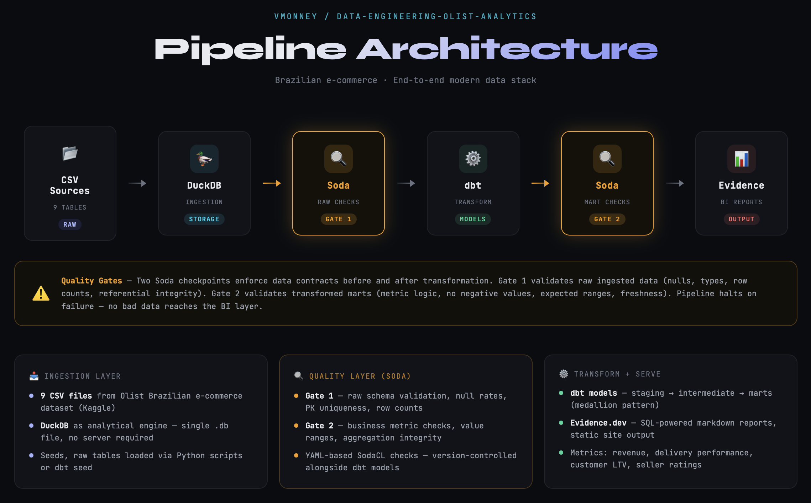
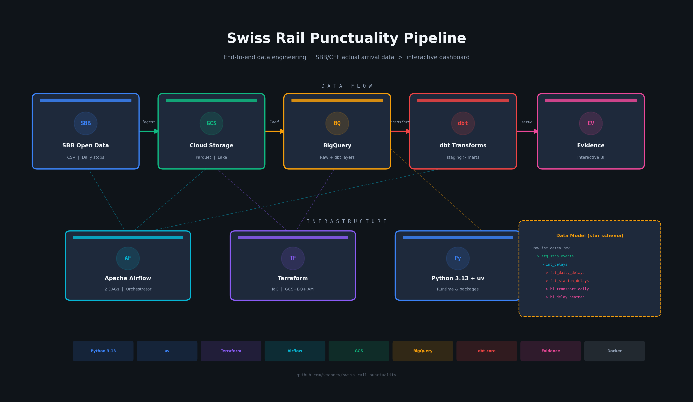
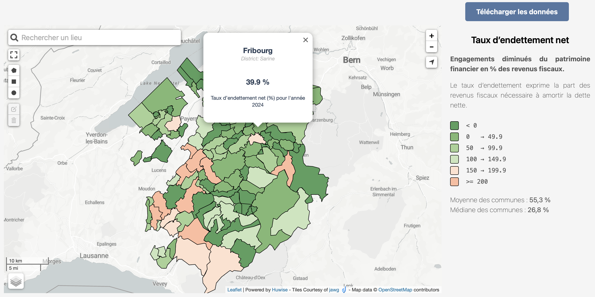
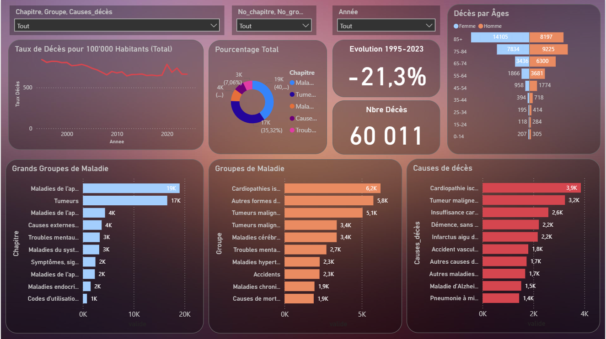
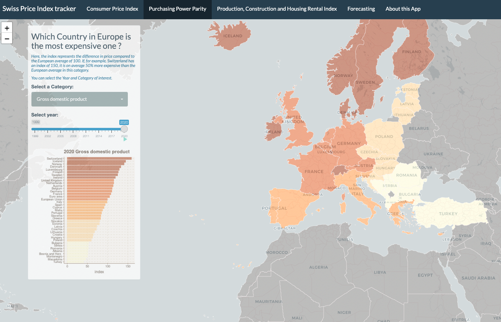
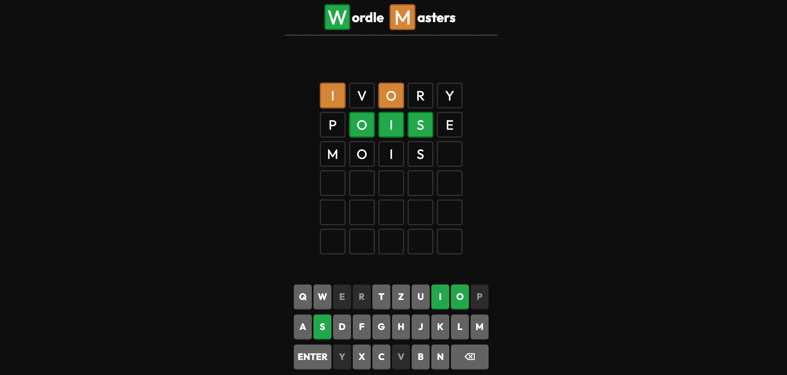

Data Engineering
- Batch data ingestion and transformation pipelines
- Dimensional modeling and analytics-ready datasets
- Data quality validation and monitoring
Data Engineer / OGD Lead
I design and deliver end-to-end data solutions, from ETL and quality controls to governance-ready models and business-facing dashboards.
Currently working as a Data Engineer for the Statistical Services of the canton of Fribourg, Switzerland.
Data Engineer and OGD Lead with a hands-on focus on public-sector data modernization, analytics engineering, and dashboard delivery.
My approach combines technical implementation and strategy: automate what is repetitive, enforce data quality, and make complex data understandable for both technical and non-technical stakeholders.

Flagship Analytics Engineering Project
End-to-end analytics engineering project built on the Brazilian Olist e-commerce dataset (100k+ orders, 8 source tables), covering ingestion, layered quality checks, dbt modeling, orchestration, and BI delivery.
Impact: Demonstrates a production-style workflow that improves data trust, accelerates reporting, and provides reusable modeled datasets for analysis.

End-to-End Data Engineering Pipeline
Built a full pipeline around Swiss Federal Railways punctuality data, from automated raw ingestion and cloud storage to warehouse modeling and interactive dashboard delivery for delay analysis.
Impact: Shows production-style orchestration and analytics engineering that turns large-scale transport data into trusted, decision-ready punctuality insights.

Public Sector Data Pipeline
Built an end-to-end pipeline at the Statistical Office to publish indicators for the communes of Fribourg: from CSV source files to automated ingestion with Azure DevOps, Python transformations, and Control-M orchestration. Huwise was used to manage metadata, data publication, and visualization delivery.
Impact: Improves reliability and timeliness of municipal indicators through a repeatable and automated publication workflow.

Public Health Analytics Dashboard
Designed and built a Power BI dashboard from a Microsoft SQL Server data source to analyze causes of death in the canton of Fribourg. The project included data transformation and structuring steps to make the dataset analytics-ready for reporting.
Impact: Provides a clearer view of mortality patterns over time and supports evidence-based interpretation for public-sector analysis.
Internal work project - no public link available.

Interactive Analytics Dashboard
Built an interactive dashboard to track price trends across consumption, production, construction, and rental segments, with additional European comparisons.
Impact: Supports quicker interpretation of inflation-related indicators through clear visual exploration.

Applied Machine Learning
Developed a machine learning workflow using questionnaire data to distinguish urgent care needs from lower-priority cases.
Impact: Illustrates how predictive models can help prioritize healthcare interventions under resource constraints.

Frontend Engineering
Implemented a browser-based game inspired by Wordle to strengthen UI logic and interactive JavaScript development skills.
Impact: Demonstrates product-minded implementation, usability focus, and clean front-end execution.
I am a Swiss data professional in my thirties, passionate about transforming data into useful products. I value rigorous methods, practical outcomes, and collaboration with domain experts.
Outside of work, I enjoy sports, piano, and humor. I am always open to discussing data projects, analytics opportunities, and collaboration ideas.
Interested in discussing data engineering, analytics, or a new project opportunity? I would be happy to connect.
Email me